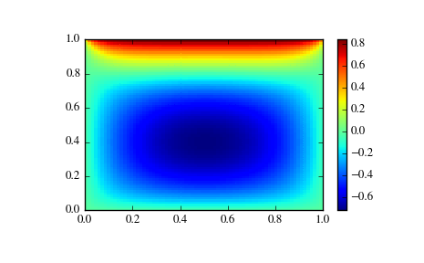

This is a collection of general-purpose nonlinear multidimensional solvers. These solvers find x for which F(x) = 0. Both x and F can be multidimensional.
Routines¶
Large-scale nonlinear solvers:
| newton_krylov(F, xin[, iter, rdiff, method, ...]) | Find a root of a function, using Krylov approximation for inverse Jacobian. |
| anderson(F, xin[, iter, alpha, w0, M, ...]) | Find a root of a function, using (extended) Anderson mixing. |
General nonlinear solvers:
| broyden1(F, xin[, iter, alpha, ...]) | Find a root of a function, using Broyden’s first Jacobian approximation. |
| broyden2(F, xin[, iter, alpha, ...]) | Find a root of a function, using Broyden’s second Jacobian approximation. |
Simple iterations:
| excitingmixing(F, xin[, iter, alpha, ...]) | Find a root of a function, using a tuned diagonal Jacobian approximation. |
| linearmixing(F, xin[, iter, alpha, verbose, ...]) | Find a root of a function, using a scalar Jacobian approximation. |
| diagbroyden(F, xin[, iter, alpha, verbose, ...]) | Find a root of a function, using diagonal Broyden Jacobian approximation. |
Examples¶
Small problem¶
>>> def F(x):
... return np.cos(x) + x[::-1] - [1, 2, 3, 4]
>>> import scipy.optimize
>>> x = scipy.optimize.broyden1(F, [1,1,1,1], f_tol=1e-14)
>>> x
array([ 4.04674914, 3.91158389, 2.71791677, 1.61756251])
>>> np.cos(x) + x[::-1]
array([ 1., 2., 3., 4.])
Large problem¶
Suppose that we needed to solve the following integrodifferential equation on the square \([0,1]\times[0,1]\):
\[\nabla^2 P = 10 \left(\int_0^1\int_0^1\cosh(P)\,dx\,dy\right)^2\]
with \(P(x,1) = 1\) and \(P=0\) elsewhere on the boundary of the square.
The solution can be found using the newton_krylov solver:
import numpy as np
from scipy.optimize import newton_krylov
from numpy import cosh, zeros_like, mgrid, zeros
# parameters
nx, ny = 75, 75
hx, hy = 1./(nx-1), 1./(ny-1)
P_left, P_right = 0, 0
P_top, P_bottom = 1, 0
def residual(P):
d2x = zeros_like(P)
d2y = zeros_like(P)
d2x[1:-1] = (P[2:] - 2*P[1:-1] + P[:-2]) / hx/hx
d2x[0] = (P[1] - 2*P[0] + P_left)/hx/hx
d2x[-1] = (P_right - 2*P[-1] + P[-2])/hx/hx
d2y[:,1:-1] = (P[:,2:] - 2*P[:,1:-1] + P[:,:-2])/hy/hy
d2y[:,0] = (P[:,1] - 2*P[:,0] + P_bottom)/hy/hy
d2y[:,-1] = (P_top - 2*P[:,-1] + P[:,-2])/hy/hy
return d2x + d2y - 10*cosh(P).mean()**2
# solve
guess = zeros((nx, ny), float)
sol = newton_krylov(residual, guess, method='lgmres', verbose=1)
print('Residual: %g' % abs(residual(sol)).max())
# visualize
import matplotlib.pyplot as plt
x, y = mgrid[0:1:(nx*1j), 0:1:(ny*1j)]
plt.pcolor(x, y, sol)
plt.colorbar()
plt.show()
